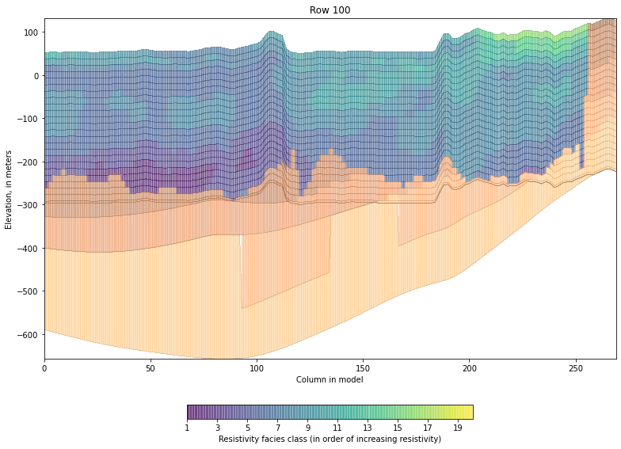

How to use USGS-MAP-gwmodels¶
[1]:
from pathlib import Path
import numpy as np
from mfsetup.grid import MFsetupGrid
from mapgwm.framework import setup_model_layers, plot_slice
flopy is installed in /home/travis/miniconda/envs/test/lib/python3.7/site-packages/flopy
Define some input for all preprocessing¶
[2]:
test_data_path = Path('../mapgwm/tests/data')
output_folder = Path('output')
output_folder.mkdir(exist_ok=True) # make the output folder if it doesn't exist
# model grid for the MS Delta inset model
ncol=270
nrow=605
dxy=500.
delr = np.ones(ncol) * dxy
delc = np.ones(nrow) * dxy
delta_inset_model_grid = MFsetupGrid(delc, delr, top=None, botm=None,
lenuni=2, epsg=5070,
xoff=434955, yoff=1040285, angrot=0.0)
Set up the model layering and property zones¶
from AEM-based voxel data and raster surfaces of hydrogeologic contacts
Define some input¶
[3]:
# mean dem values for each 1 km gridcell, elevation units of feet
dem_means_raster = test_data_path / 'rasters/dem_mean_elevs_1000.tif'
# AEM electrical resistivity-based facies classes from tempest and resolve surveys
# (All facies classes version)
facies_classes_netcdf = test_data_path / 'netcdf/RSTM_res_fac_depth_15m.nc'
# Original MERAS framework (1 mi resolution), elevation units of feet
framework_rasters = [
test_data_path / 'rasters/vkbg_surf.tif', # Vicksburg-Jackson Group (top)
test_data_path / 'rasters/ucaq_surf.tif', # Upper Claiborne aquifer (top)
test_data_path / 'rasters/mccu_surf.tif', # Middle Claiborne confining unit (t
test_data_path / 'rasters/mcaq_surf.tif', # Middle Claiborne aquifer (top)
test_data_path / 'rasters/lccu_surf.tif', # Lower Claiborne confining unit (to
test_data_path / 'rasters/lcaq_surf.tif', # Lower Claiborne aquifer (top)
test_data_path / 'rasters/mwaq_surf.tif', # Middle Wilcox aquifer (top)
test_data_path / 'rasters/lwaq_surf.tif', # Lower Wilcox aquifer (top)
test_data_path / 'rasters/mdwy_surf.tif', # Midway confining unit (top)
]
framework_unit_names = [
'Undifferentiated sediments\nabove the Vicksburg',
'Vicksburg-Jackson Group',
'Upper Claiborne aquifer',
'Middle Claiborne confining unit',
'Middle Claiborne aquifer',
'Lower Claiborne confining unit',
'Lower Claiborne aquifer',
'Middle Wilcox aquifer',
'Lower Wilcox aquifer'
]
[4]:
layers, zone_array = setup_model_layers(dem_means_raster,
facies_classes_netcdf,
framework_rasters,
delta_inset_model_grid,
facies_class_variable='fac_a', # variable in facies_classes_netcdf with facies zones
dem_elevation_units='feet',
framework_raster_elevation_units='feet',
model_length_units='meters', output_folder=output_folder,
framework_unit_names=framework_unit_names)
reading data from ../mapgwm/tests/data/rasters/dem_mean_elevs_1000.tif...
finished in 0.05s
reading data from ../mapgwm/tests/data/rasters/vkbg_surf.tif...
finished in 0.03s
reading data from ../mapgwm/tests/data/rasters/ucaq_surf.tif...
finished in 0.03s
reading data from ../mapgwm/tests/data/rasters/mccu_surf.tif...
finished in 0.03s
reading data from ../mapgwm/tests/data/rasters/mcaq_surf.tif...
finished in 0.03s
reading data from ../mapgwm/tests/data/rasters/lccu_surf.tif...
finished in 0.03s
reading data from ../mapgwm/tests/data/rasters/lcaq_surf.tif...
finished in 0.03s
reading data from ../mapgwm/tests/data/rasters/mwaq_surf.tif...
finished in 0.03s
reading data from ../mapgwm/tests/data/rasters/lwaq_surf.tif...
finished in 0.03s
reading data from ../mapgwm/tests/data/rasters/mdwy_surf.tif...
finished in 0.03s
computing cell thicknesses...
finished in 6.08s
computing cell thicknesses...
finished in 13.25s
wrote output/botm_array/model_top.tif
wrote output/botm_array/botm0.tif
wrote output/botm_array/botm1.tif
wrote output/botm_array/botm2.tif
wrote output/botm_array/botm3.tif
wrote output/botm_array/botm4.tif
wrote output/botm_array/botm5.tif
wrote output/botm_array/botm6.tif
wrote output/botm_array/botm7.tif
wrote output/botm_array/botm8.tif
wrote output/botm_array/botm9.tif
wrote output/botm_array/botm10.tif
wrote output/botm_array/botm11.tif
wrote output/botm_array/botm12.tif
wrote output/botm_array/botm13.tif
wrote output/botm_array/botm14.tif
wrote output/botm_array/botm15.tif
wrote output/botm_array/botm16.tif
wrote output/botm_array/botm17.tif
wrote output/botm_array/botm18.tif
wrote output/botm_array/botm19.tif
wrote output/botm_array/botm20.tif
wrote output/botm_array/botm21.tif
wrote output/botm_array/botm22.tif
wrote output/botm_array/botm23.tif
wrote output/botm_array/botm24.tif
wrote output/botm_array/botm25.tif
wrote output/botm_array/botm26.tif
wrote output/botm_array/botm27.tif
wrote output/botm_array/botm28.tif
wrote output/botm_array/botm29.tif
wrote output/botm_array/botm30.tif
wrote output/zones/rasters/res_fac0.tif
wrote output/zones/rasters/res_fac1.tif
wrote output/zones/rasters/res_fac2.tif
wrote output/zones/rasters/res_fac3.tif
wrote output/zones/rasters/res_fac4.tif
wrote output/zones/rasters/res_fac5.tif
wrote output/zones/rasters/res_fac6.tif
wrote output/zones/rasters/res_fac7.tif
wrote output/zones/rasters/res_fac8.tif
wrote output/zones/rasters/res_fac9.tif
wrote output/zones/rasters/res_fac10.tif
wrote output/zones/rasters/res_fac11.tif
wrote output/zones/rasters/res_fac12.tif
wrote output/zones/rasters/res_fac13.tif
wrote output/zones/rasters/res_fac14.tif
wrote output/zones/rasters/res_fac15.tif
wrote output/zones/rasters/res_fac16.tif
wrote output/zones/rasters/res_fac17.tif
wrote output/zones/rasters/res_fac18.tif
wrote output/zones/rasters/res_fac19.tif
wrote output/zones/rasters/res_fac20.tif
wrote output/zones/rasters/res_fac21.tif
wrote output/zones/rasters/res_fac22.tif
wrote output/zones/rasters/res_fac23.tif
[5]:
framework_unit_labels = dict(zip(range(13, 32), framework_unit_names))
[6]:
plot_slice(layers, property_data=zone_array,
row=100, column=slice(None),
voxel_start_layer=0, voxel_zones=np.arange(1, 21), cmap='copper',
voxel_cmap='viridis', unit_labels=framework_unit_labels)
[6]:
<AxesSubplot:title={'center':'Row 100'}, xlabel='Column in model', ylabel='Elevation, in meters'>

[ ]: